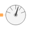
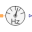
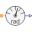

AbsoluteSensorPartial potential sensor |

|
Information
This information is part of the Modelica Standard Library maintained by the Modelica Association.
The absolute sensor partial model provides a single PositiveMagneticPort to measure the complex magnetic potential. Additionally this model contains a base icon and a definition of the angular frequency.
Connectors (1)
| port |
Type: PositiveMagneticPort Description: Quasi-static magnetic port |
|---|
Extended by (3)
|
Modelica.Magnetic.QuasiStatic.FluxTubes.Sensors Potential sensor |
|
|  |
Modelica.Magnetic.QuasiStatic.FluxTubes.Sensors Frequency sensor |
|  |
Modelica.Magnetic.QuasiStatic.FluxTubes.Sensors Sensor of reference angle gamma |